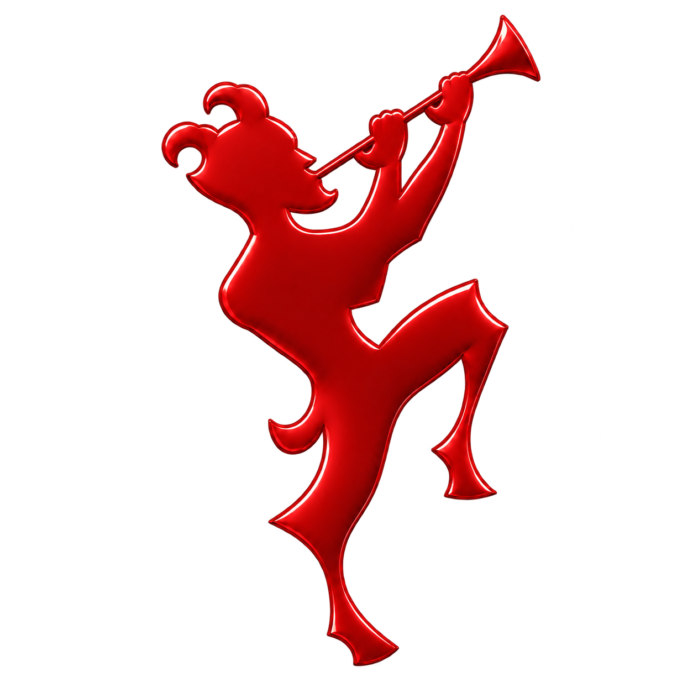

Каналы и соцсети
Обложки, аватары и шаблоны постов. Единый стиль, по которому тебя узнают в ленте.

virs made itПять авторских работ и пять новых концепций. Открой проект, чтобы рассмотреть детали.
Интерактивный эксперимент со светом, материалом и объёмом. Поверни объект и посмотри, как меняются отражения.
Мышью или пальцем — вращение. Прокрутка страницы работает за пределами объекта.
3D недоступно в этом браузере. Остальные разделы сайта работают.
Дизайн помогает объяснить, кто ты, выделить главное и сделать проект узнаваемым.
Обложки, аватары и шаблоны постов. Единый стиль, по которому тебя узнают в ленте.
Визуальная идея, логотип, палитра и типографика. Основа для последовательного образа бренда.
Макеты упаковки, этикеток и презентационные материалы, которые помогают показать продукт.
Афиши событий, оформление релизов и рекламные визуалы с выразительной композицией.
Лендинги, портфолио и дизайн экранов приложений. Понятная структура и адаптация под разные экраны.
Ты рассказываешь о задаче, аудитории и том, где будет использоваться дизайн.
Выбираем визуальную идею, настроение и подходящие референсы.
Развиваем выбранную концепцию и согласовываем правки и итоговые форматы.
Напиши, что нужно оформить, и приложи пару примеров, которые тебе нравятся.